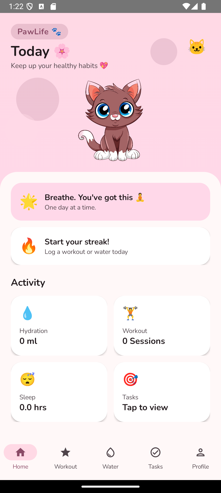
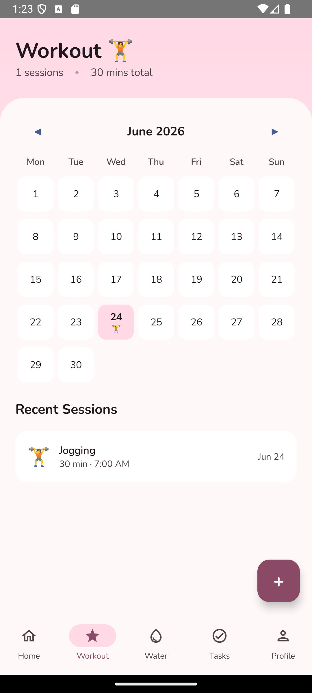
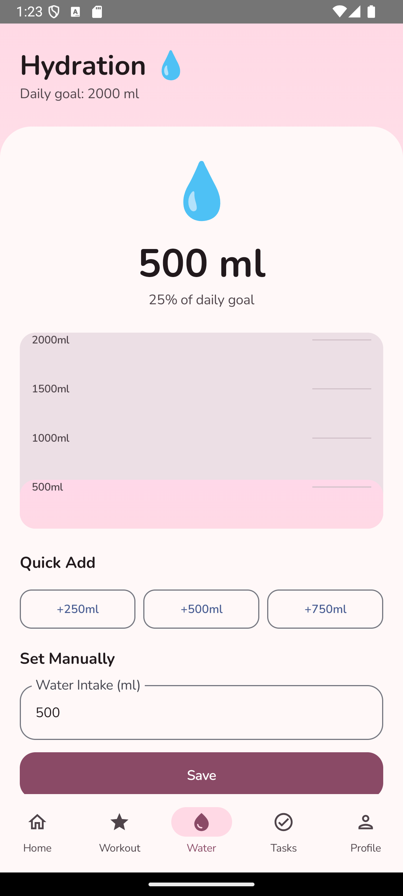
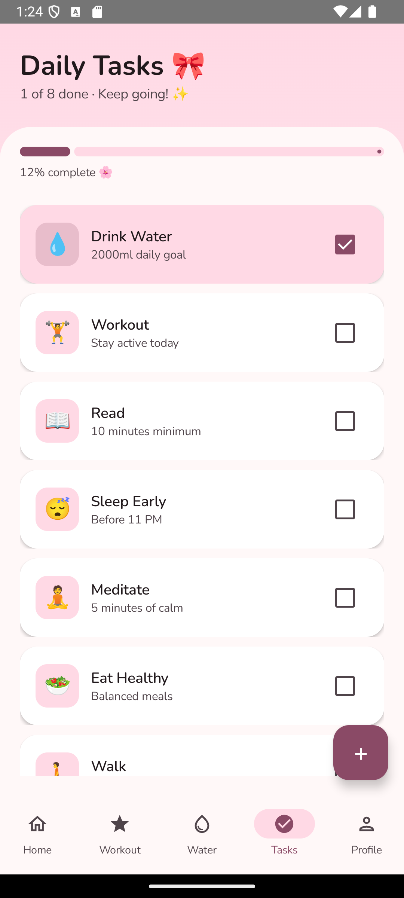
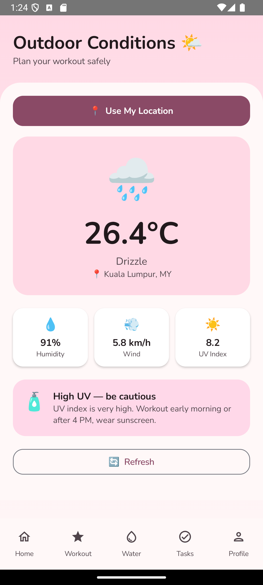
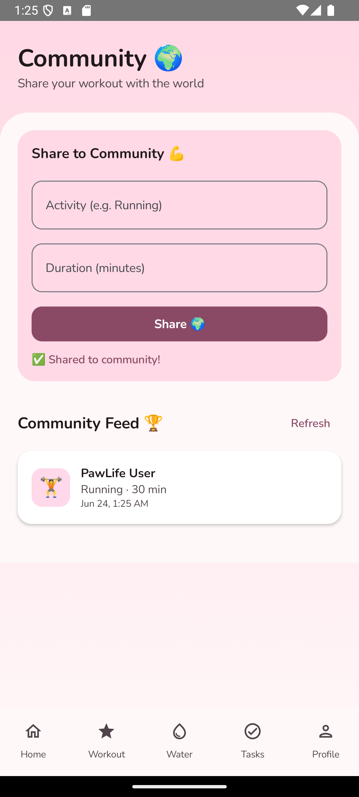
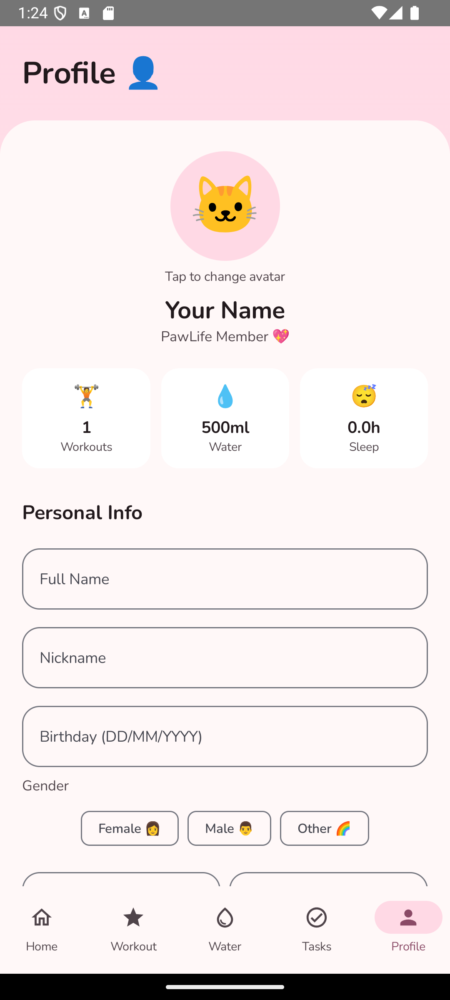

I built PawLife — a health & wellness companion app where a virtual cat grows with your healthy habits. From basic layouts to full-stack mobile development with Firebase, GPS, and REST APIs.
In Lab 1, I initiated my development journey by creating the DailyZen Home screen layout template using Jetpack Compose's core composables—Row, Column, and Box—learning how Modifier chains like padding(), fillMaxWidth(), and weight() provide precise declarative control over user layout viewports. Positioning the initial virtual mindfulness layout elements over a structured background banner using Box layering was a technical challenge, but it taught me how composable nesting rules work visually. This lab built the concrete engineering foundation that my entire layout workflow relied on before eventually transitioning the ecosystem into PawLife.
Lab 2 introduced interactivity through TextField, Button, and remember { mutableStateOf() } as I built an early version of the workout logging dialog inside DailyZen, where users enter workout type, duration, and time metrics. Understanding when to hoist state up versus keeping it local became much clearer through building this operational form, and Compose's reactive model—where the UI automatically reflects underlying state updates—fundamentally changed how I structuralize interactive interfaces before eventually rebranding the ecosystem to PawLife.
Lab 3 pushed me into Material Design 3's theming system, where I engineered the application's signature soft-pink palette using MaterialTheme with custom ColorScheme tokens. This process began as the core design language for DailyZen before transitioning into PawLife, and understanding tonal surfaces versus primary containers gave me the concrete vocabulary to create a UI that feels consistently warm and playful. The pink gradient header and rounded card aesthetic that defines the app's visual identity was born directly from this structural lab experience.
Lab 4 introduced NavHost and NavController, which I initially used to connect the five main screens of DailyZen through a structural bottom navigation bar. Sharing background state across viewports via a single centralized ViewModel using StateFlow ensured dashboard tracking counters updated instantly when changes occurred on secondary sub-screens. This specific architectural pattern became the structural backbone of the entire multi-screen application flow, which easily allowed me to transition the ecosystem into PawLife during the next lab phase.
Lab 5 was the architectural keystone where the app officially transitioned from DailyZen into PawLife—integrating the Room Database with custom DAOs and Entities to complete the robust MVVM + Repository structural pattern. I built local offline persistence for PawLife's pet care logs, pet hydration tracking, sleep data, and daily task completion states, keeping all database query operations off the main UI thread via Kotlin coroutines. Handling entity schema migrations when I added data structures like SleepEntity and TaskEntity taught me a strict versioning discipline that saved hours of data-loss debugging during Project 2.
Young Malaysians struggle to maintain consistent health habits — workouts start strong but fade without accountability or fun. PawLife solves this by giving users a virtual cat companion that visually grows healthier when they log their daily workouts, water intake, and tasks, creating an emotional connection that motivates healthy living in line with SDG 3.
Five connected screens via Jetpack Navigation Compose: Home Dashboard (cat companion + activity summary), Workout Log with calendar, Hydration Tracker with quick-add buttons, Daily Tasks checklist with progress bar, and Profile. A shared PawLifeViewModel manages all state through StateFlow — adding a workout instantly updates the home cat's mood indicator.
Building PawLife reinforced how centralising state in a single ViewModel prevents data inconsistencies across screens. Designing the navigation graph with a persistent bottom bar taught me how NavigationBar composables integrate with NavHost without rebuilding the entire composable tree on tab switch. The "progress over perfection" design philosophy I adopted — showing a streak system rather than punishing missed days — made the UX feel genuinely supportive rather than stressful.







PawLife needed to become context-aware — knowing whether outdoor conditions were safe for a run, syncing habit data across devices, and connecting users in a shared community. PawLife Advanced integrates the Open-Meteo REST API for real-time weather data via GPS location, Firebase Firestore for cloud-synced community posts, Firebase Auth for secure accounts, and Room for robust local persistence — all tied to SDG 3: Good Health & Well-Being.
Seven+ screens including the new Outdoor Conditions screen (GPS + Open-Meteo weather API showing temperature, humidity, wind, UV index and safe-to-exercise advice), Community Feed (Firebase Firestore — post and view community workouts in real time), Sleep Tracker modal with a slider UI, and a Profile screen with personalised stats. All data persists locally via Room and syncs to the cloud via Firebase.
The most complex challenge was orchestrating Room and Firebase Firestore together — ensuring local inserts and cloud syncs happened in the correct order without blocking the main thread, which deepened my understanding of Kotlin coroutines and suspend functions as architectural tools. Integrating the Open-Meteo REST API via Retrofit required careful JSON parsing and graceful handling of API timeouts — I learned to show cached local data when the network was unavailable. Building the community feed taught me Firestore's real-time listeners, which required careful lifecycle management to avoid memory leaks by cancelling listeners in onCleared() of the ViewModel. GPS integration introduced runtime permission flows that required thoughtful first-launch UX, which significantly improved the app's polish and made PawLife feel like a production-quality application.
My journey began in Lab 1 where I learned the very basics of Jetpack Compose — laying out UI elements using Row, Column, Box, and Text to recreate PawLife's home screen. It felt simple but foundational. By Lab 2, I added interactivity through TextField and Button with state management, which revealed how Compose's reactive model keeps UI in sync with data without manual view updates. Lab 3 was where PawLife found its visual identity — applying a soft-pink Material Design 3 palette with rounded surfaces and gradient headers that made the app feel warm and encouraging. Lab 4 introduced multi-screen navigation and ViewModel, teaching me how to share state across the five main screens through a persistent bottom navigation bar. Lab 5 was the architectural turning point — Room Database with the full MVVM + Repository pattern made PawLife's data genuinely persistent and reliable.
By Project 2, PawLife had integrated every lab's lessons: Room for local data, Firebase Firestore for the Community Feed, the Open-Meteo REST API via Retrofit for weather-aware outdoor workout advice, and GPS via FusedLocationProviderClient for real-time location. The app I shipped was unrecognisable from my Lab 1 screens — and that gap represents the learning.
The biggest technical challenge was making the Outdoor Conditions screen work reliably. Getting GPS coordinates, passing them to the Open-Meteo API via Retrofit, parsing the JSON response, and rendering the result — all asynchronously without blocking the UI — required me to properly understand coroutine scopes, Flow, and the Repository pattern working together as a real pipeline rather than abstract concepts.
Integrating Firebase Firestore alongside Room was another challenge — ensuring local inserts and cloud syncs happened in the correct order without blocking the main thread taught me to treat Kotlin coroutines and suspend functions as architectural tools, not just concurrency helpers. Managing Firestore's real-time listeners without causing memory leaks — by cancelling them in the ViewModel's onCleared() — was the kind of production-quality detail that Lab exercises don't cover but real apps demand.
Looking back, the most important skill this course developed was not any single API or library — it was the discipline of layered architecture. Once MVVM + Repository + Room was solid in Lab 5, adding Firebase, Retrofit, and GPS in Project 2 felt like extending a system rather than rewriting one. That composability is what I will carry forward into every project I build.
Free, open-source weather API used in the Outdoor Conditions screen to fetch real-time temperature, humidity, wind speed, and UV index based on GPS coordinates — no API key required. open-meteo.com/en/docs
Type-safe HTTP client for Android used to make REST API calls to Open-Meteo with Gson converter for JSON parsing. square.github.io/retrofit
Cloud NoSQL database used for the Community Feed — storing and retrieving community workout posts in real time with snapshot listeners. firebase.google.com/docs/firestore
Provides secure anonymous and email-based user authentication so Community Feed posts are attributed to individual users. firebase.google.com/docs/auth
Local SQLite persistence library storing workout logs, hydration records, sleep data, task completion states, and user profile on-device. developer.android.com/training/data-storage/room
Android's modern declarative UI toolkit used to build the entire PawLife interface across all labs and projects. developer.android.com/jetpack/compose
Manages screen-to-screen navigation with a single NavHost and a persistent bottom navigation bar across all five main screens. developer.android.com/jetpack/compose/navigation
FusedLocationProviderClient used to obtain the device's GPS coordinates for the Outdoor Conditions screen weather lookup. developers.google.com/android/reference
Design system providing theming, typography, colour schemes, and accessible UI components — the visual foundation for PawLife's soft-pink identity. m3.material.io
Used throughout development for debugging Kotlin/Compose errors, explaining Room setup (DAOs, entities, migrations), structuring MVVM architecture (Repository pattern, StateFlow, ViewModel factories), and reviewing navigation logic. All prompts were provided by the developer; all generated code was reviewed, understood, and integrated manually.